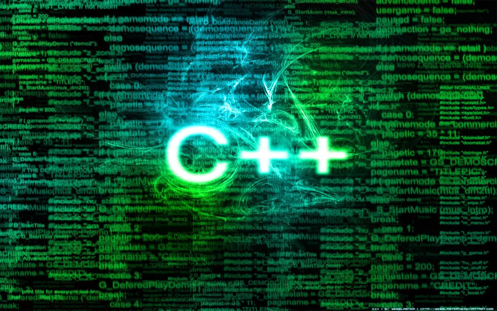

Limbaje de programare

Un limbaj de programare este un set bine definit de expresii și reguli (sau tehnici) valide de formulare a instrucțiunilor pentru un computer. Un limbaj de programare are definite un set de reguli sintactice și semantice. El dă posibilitatea programatorului să specifice în mod exact și amănunțit acțiunile pe care trebuie să le execute calculatorul, în ce ordine și cu ce date. Specificarea constă practic în întocmirea/scrierea programelor necesare ("programare").
C

C este un limbaj de programare standardizat, compilat, de nivel mediu. Este implementat pe majoritatea platformelor de calcul existente azi, și este cel mai popular limbaj de programare pentru scrierea de software de sistem. Este apreciat pentru eficiența codului obiect pe care îl poate genera, și pentru portabilitatea sa.
A fost dezvoltat la începutul anilor 1970 de Ken Thompson și Dennis Ritchie, care aveau nevoie de un limbaj simplu și portabil pentru scrierea nucleului sistemului de operare UNIX.
Sintaxa limbajului C a stat la baza multor limbaje create ulterior și încă populare azi: C++, Java, JavaScript, C#, D.
C++
C++ (pronunțat în română "C plus plus" și în engleză "si plas plas") este un limbaj de programare general, compilat. Este un limbaj multi-paradigmă, cu verificarea statică a tipului variabilelor ce suportă programare procedurală, abstractizare a datelor, programare orientată pe obiecte. În anii 1990, C++ a devenit unul din cele mai populare limbaje de programare comerciale, rămânând astfel până azi.
Bjarne Stroustrup de la Bell Labs a dezvoltat C++ (inițial denumit C cu clase) în anii 1980, ca o serie de îmbunătățiri ale limbajului C. Acestea au început cu adăugarea noțiunii de clase, apoi de funcții virtuale, suprascrierea operatorilor, moștenire multiplă, șabloane (engleză template) și excepții. Limbajul de programare C++ a fost standardizat în 1998 ca și ISO 14882:1998, versiunea curentă fiind din 2003, ISO 14882:2003. Următoarea versiune standard, cunoscută informal ca C++0x, este în lucru.
Pascal
Pascal este unul dintre limbajele de programare de referință în știința calculatoarelor. Pascal a fost dezvoltat de elvețianul Niklaus Wirth în 1970 pentru a pune în practică programarea structurată, aceasta fiind mai ușor de compilat. Unul din marile sale avantaje este asemănarea cu limbajul natural limba engleză, ceea ce îl face limbajul ideal pentru cei care sunt la primul contact cu programarea. Pascal este bazat pe limbajul Algol și a fost denumit astfel în onoarea matematicianului Blaise Pascal, creditat pentru construirea primelor mașini de calcul numeric. Wirth a mai dezvoltat limbajele Modula-2 și Oberon, similare cu Pascal.
Cele mai populare implementări a acestui limbaj au fost Turbo Pascal și Borland Pascal, ambele ale firmei Borland cu versiuni pentru Macintosh și DOS, care i-au adăugat limbajului obiecte și au fost continuate cu versiuni destinate programării vizuale pentru Microsoft Windows (utilizate de mediul de dezvoltare Delphi) și pentru Linux (Kylix).
Vezi și ...
Comparație
Limbajul de programare C++ a fost inițial derivat din C. Totuși, nu absolut orice program scris în C este valid C++. Deoarece C și C++ au evoluat independent, au apărut, din nefericire, o serie de incompatibilități între cele două limbaje de programare.

Cea mai amplă revizie a limbajui C, C99, a creat un număr suplimentar de conflicte. Diferențele fac să fie greu de scris programe și biblioteci care să fie compilate și să ruleze corect în calitate de cod C sau C++, și produce confuzii celor care programează în ambele limbaje. Diferențele fac ca fiecare din cele două limbaje de programare să împrumute din caracteristicile celuilalt limbaj de programare.
Limbaje de programare de viitor
Domeniul IT este unul foarte dinamic, in continua dezvoltare, care ofera numeroase oportunitati de angajare. Pentru a veni in ajutorul tinerilor care isi doresc sa lucreze in domeniul IT, dar si a specialistilor care sunt interesati de evolutia pietei, HiPo.ro a realizat o analiza a tendintelor privind utilizarea diferitelor limbaje de programare.

In prezent, cele mai populare 10 limbaje de programare sunt: Java, C, C++, PHP, C#, Objectiv C, Visual Basic, Python, Perl si Java Script. In graficul de mai jos poti vedea detalii legate de ponderea fiecarui limbaj de programare in ceea ce priveste popularitatea sa in randul specialistilor din domeniul IT din intreaga lume, a locurilor de munca disponibile, precum si a ofertelor de cursuri de specializare.